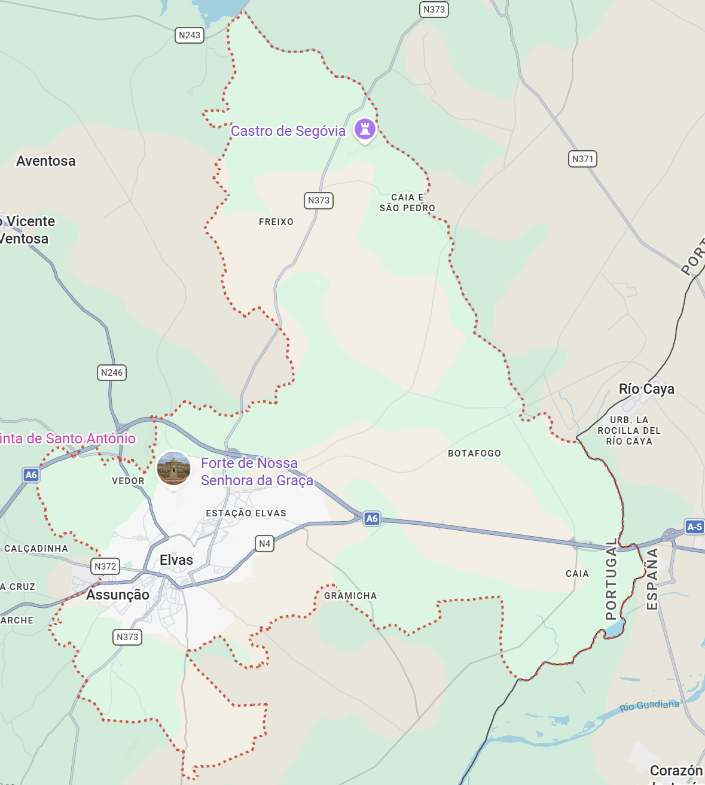
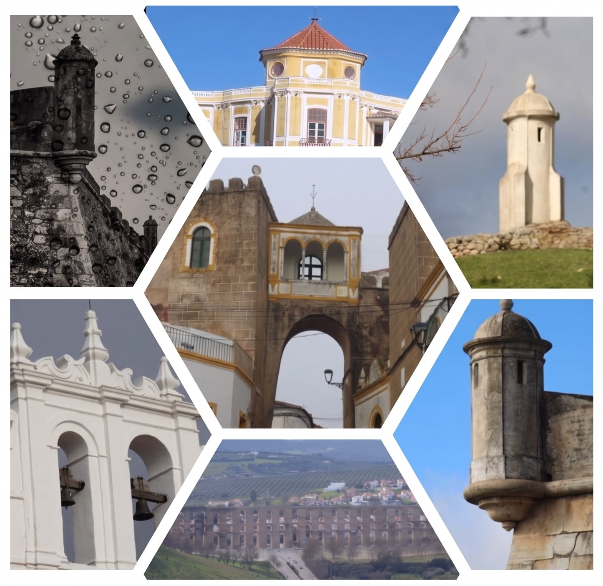

Localização
Elvas é uma cidade localizada no Alto Alentejo, junto à fronteira com Espanha. Destaca-se pelas suas muralhas, fortes e pelo Aqueduto da Amoreira, que refletem a importância histórica da cidade na defesa de Portugal.


Elvas é uma cidade localizada no Alto Alentejo, junto à fronteira com Espanha. Destaca-se pelas suas muralhas, fortes e pelo Aqueduto da Amoreira, que refletem a importância histórica da cidade na defesa de Portugal.
